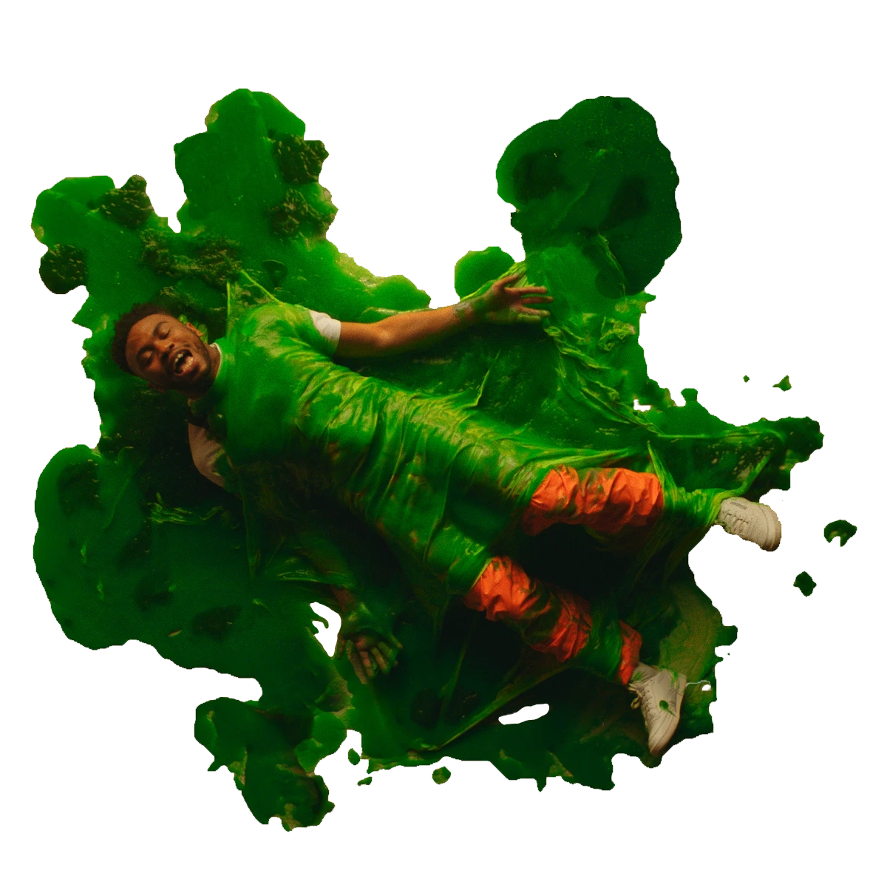

Creative
Netw0rk
Cu1ture
This course gives a broad introduction to the fundamentals of creative computing and network culture. Through readings and practical examples, students explore the histories of the Internet, computing, and interactivity as well as gain knowledge of fundamental technical tools used for creating network-based media.
